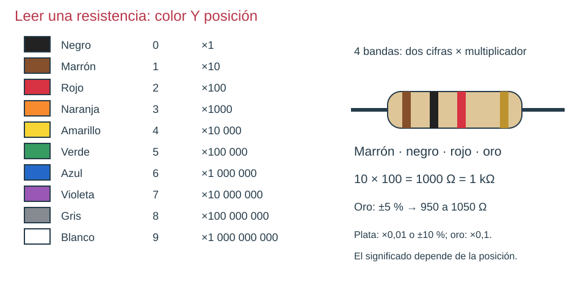
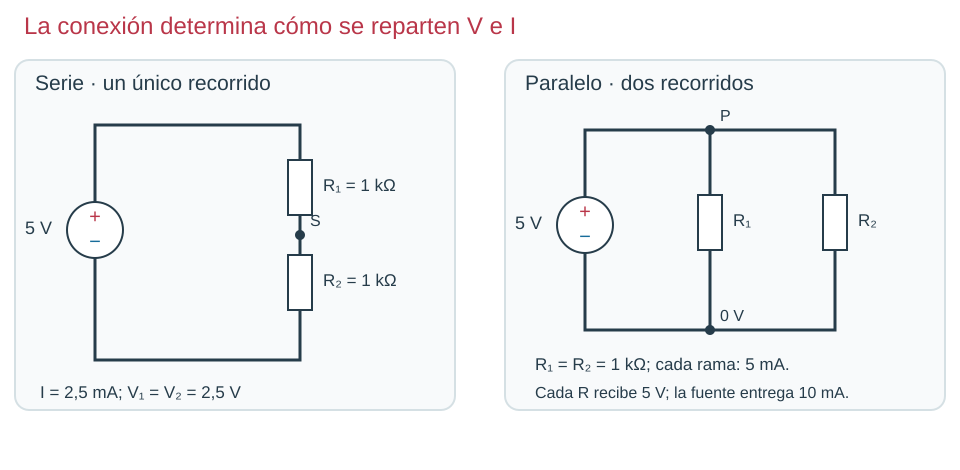
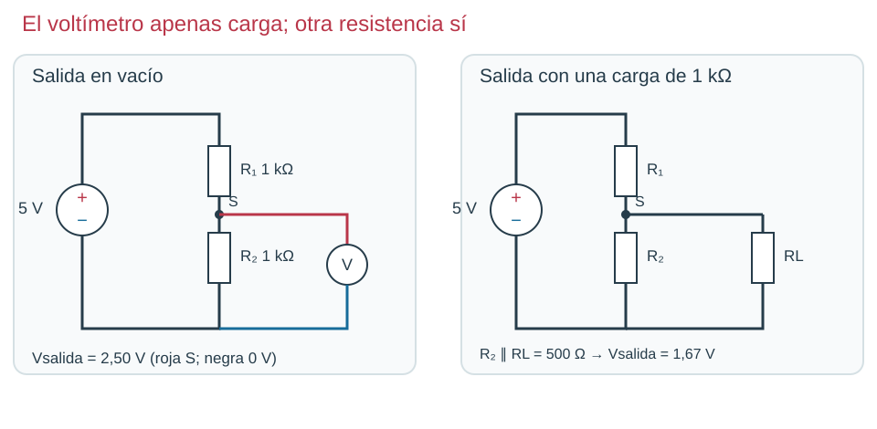

Resistencias que regulan
Los esquemas del capítulo acompañan las preguntas. Responde antes de consultar la explicación. Sin cronómetro.

Tabla de cifras y multiplicadores; ejemplo completo de cuatro bandas.
Mismas resistencias y fuente de 5 V; distinta conexión y distinta corriente total.
La salida siempre se mide entre S y 0 V. La carga abre un camino adicional desde S.En la figura serie/paralelo, cada resistencia es de 1 kΩ. ¿En cuál entrega 10 mA la fuente de 5 V? Justifica por ramas.
Solución y explicación
En paralelo: cada rama conduce 5 mA y la fuente suma 10 mA. En serie pasan 2,5 mA por ambas.
El divisor igual de la figura entrega 2,5 V. Conectar 1 kΩ de carga a S hace que baje. ¿Qué asociación aparece?
Solución y explicación
La carga está en paralelo con R₂, que pasa a equivaler a 500 Ω. La salida baja a 5×500/1500 = 1,67 V.